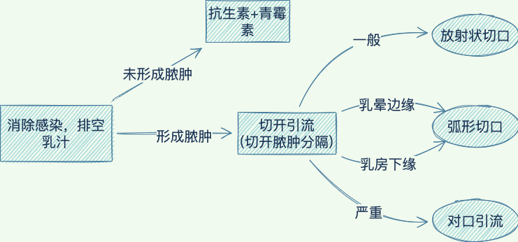

24.乳腺疾病
一、多乳头、多乳房畸形
副乳腺畸形多见于腋窝
二、急性乳腺炎
- 1.
性质：急性化脓性感染
- 2.
易发年龄：初产妇（3～4周）
- 3.
病因：
-
乳汁淤积
-
细菌入侵（金黄色葡萄球菌）
-
- 4.
临床表现：
-
乳房红肿热痛
-
淋巴结肿大压痛
-
蜂窝织炎 --> 脓肿 --> 乳房后脓肿
-
- 5.
治疗：

- 6.
预防：避免乳汁淤积，防止乳头损伤 ，并保持其清洁
三、乳腺囊性增生病
-
良性乳腺结构不良
- 1.
易发年龄：中年妇女
- 2.
病因：雌、孕激素比例失调
- 3.
临床表现：
-
乳房胀痛
-
乳房肿块
-
可随月经周期变化
-
乳头溢液（浆液、浆液血性）
-
- 4.
诊断：乳腺癌肿块明确、质地偏硬
- 5.
治疗：他莫昔芬、中药逍遥散
四、乳房肿瘤
| 易发年龄 | 特点 | |
|---|---|---|
| 乳房纤维瘤 | 青年女性（20-25） | 病因：雌激素敏感性升高 治疗：肿瘤及其包膜一并切除 |
| 乳管内乳头瘤 | 经产妇（40-50） | 部位：大乳管近乳头的壶腹部 症状：溢液 治疗：亚甲蓝定位 |
| 乳房肉瘤 | 妇女（>50） | 叶状肿瘤最多见 |
乳腺癌
- 1.
发病年龄：45-50，60-64(更年期)
- 2.
病因：与雌酮与雌二醇密切相关
- 3.
转移途径：
（外上象限最多见）
-
局部扩展：Cooper韧带
-
淋巴转移
-
经胸大肌外侧缘淋巴管侵入同侧腋窝淋巴结
-
沿着乳内淋巴管的肋间穿支引流到胸骨旁淋巴结
-
-
血运转移：骨（椎骨）、肺、肝
-
- 4.
临床表现：
-
肿块质硬，不易推动
-
酒窝征（累及Cooper韧带）
-
乳头扁平、回缩、凹陷
-
皮肤橘皮样改变
-
其他
-
炎性乳腺癌：发展快，恶性程度高，炎症样表现
-
乳头湿疹样乳腺癌（Paget病）：发展慢，恶性程度低，乳头瘙痒、粗糙、糜烂
-
-
- 5.
诊断：
-
组织活检
-
分期：T(原发癌瘤) 、N(区域淋巴结) 、M(远处转移)
-
乳腺癌是异质性疾病（不同病灶有不同表现）
-
- 6.
预防：一般推荐乳腺超声联合钼靶（乳腺X光）作为筛查方法
- 7.
治疗：
乳腺癌是一个全身性疾病，采取以手术治疗为主的综合治疗策略。
手术治疗
-
保留乳房的乳腺癌切除术：术后必须辅以放疗
-
乳腺癌改良根治术(常用)
-
保留胸大肌
-
保留胸大、小肌
-
-
乳腺癌根治术
-
全乳房切除术：原位癌、微小癌及年迈体弱者
-
前哨淋巴结活检术及腋淋巴结清扫术
-